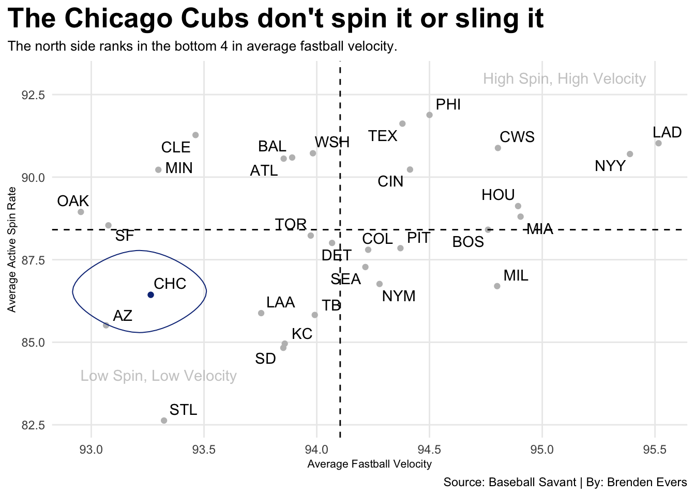

Code
library(tidyverse)
library(janitor)
library(ggplot2)
library(ggrepel)
library(ggalt)
library(patchwork)
PitchData23 <- read_csv("pitches - 2023.csv")
PitchData22 <- read_csv("pitches - 2022.csv")
PitchData21 <- read_csv("pitches - 2021.csv")
Strikeout <- read_csv("stats.csv")
Velo <- read_csv("PitchVelo.csv")
GBandHH <- read_csv("GBdata.csv")
PitchData3yrs <- bind_rows(PitchData23, PitchData22, PitchData21) |>
select(Pitcher, Team, Fourseam, Slider, Curve, Season)
AdvPitch23 <- read_csv("2023 Advanced pitching data") |>
mutate(Season = 2023)
AdvPitch22 <- read_csv("2022 Advanced Pitching Data") |>
mutate(Season = 2022)
AdvPitch21 <- read_csv("2021 Advanced Pitching Stats ") |>
mutate(Season = 2021)
AdvPitch <- bind_rows(AdvPitch21, AdvPitch22, AdvPitch23)
Wins23 <- read_csv("2023 Team Win Totals") |>
mutate(Season = 2023)
Wins22 <- read_csv("2022 Team wins") |>
mutate(Season = 2022)
Wins21 <- read_csv("2021 Team Win Totals") |>
mutate(Season = 2021)
Wins <- bind_rows(Wins21, Wins22, Wins23)
AdvWins <- Wins |>
inner_join(AdvPitch) |>
mutate(
TmSeason = paste(Tm, Season),
`HardH%` = as.numeric(gsub("%", "", `HardH%`)),
`GB%` = as.numeric(gsub("%", "", `GB%`))
)
CubsAdvWins <- AdvWins |>
filter(Tm == "Chicago Cubs")
GBHHwTeam <- PitchData3yrs |> inner_join(GBandHH, by=c("Pitcher" = "last_name, first_name", "Season" = "year"))
PitchData3yrsWKs <- PitchData3yrs |>
inner_join(Strikeout, by=c("Pitcher" = "last_name, first_name", "Season" = "year")) |>
filter(ab >= 50)
PitchData3yrsVeloWKs <- PitchData3yrsWKs |>
left_join(Velo, by=c("Pitcher" = "last_name, first_name", "Season" = "year")) |>
filter(ab >= 50) |>
mutate(
League = case_when(
Team == "CHC" ~ "National League",
Team == "ATL" ~ "National League",
Team == "MIA" ~ "National League",
Team == "NYM" ~ "National League",
Team == "PHI" ~ "National League",
Team == "WSH" ~ "National League",
Team == "CIN" ~ "National League",
Team == "MIL" ~ "National League",
Team == "PIT" ~ "National League",
Team == "STL" ~ "National League",
Team == "LAD" ~ "National League",
Team == "COL" ~ "National League",
Team == "AZ" ~ "National League",
Team == "SD" ~ "National League",
Team == "SF" ~ "National League",
Team == "TB" ~ "American League",
Team == "BAL" ~ "American League",
Team == "BOS" ~ "American League",
Team == "NYY" ~ "American League",
Team == "TOR" ~ "American League",
Team == "CLE" ~ "American League",
Team == "KC" ~ "American League",
Team == "MIN" ~ "American League",
Team == "HOU" ~ "American League",
Team == "LAA" ~ "American League",
Team == "SEA" ~ "American League",
Team == "TEX" ~ "American League",
Team == "OAK" ~ "American League",
Team == "CWS" ~ "American League",
Team == "DET" ~ "American League",
)
)
Cubs <- PitchData3yrsVeloWKs |> filter(Team == "CHC")
CubsCB <- Cubs |>
select(Team, Pitcher, Curve, Season, strikeout, cu_avg_speed, League) |>
filter(Curve > 0)
CubsFB <- Cubs |>
select(Team, Pitcher, Fourseam, Season, strikeout, ff_avg_speed, League) |>
filter(Fourseam > 0)
CubsSL <- Cubs |>
select(Team, Pitcher, Slider, Season, strikeout, sl_avg_speed, League) |>
filter(Slider > 0)
MlbCB <- PitchData3yrsVeloWKs |>
select(Team, Pitcher, Curve, Season, strikeout, cu_avg_speed, League) |>
filter(Curve > 0)
MlbFB <- PitchData3yrsVeloWKs |>
select(Team, Pitcher, Fourseam, Season, strikeout, ff_avg_speed, League) |>
filter(Fourseam > 0, ff_avg_speed > 0)
MlbSL <- PitchData3yrsVeloWKs |>
select(Team, Pitcher, Slider, Season, strikeout, sl_avg_speed, League) |>
filter(Slider > 0)
MlbSLTeam <- MlbSL |>
group_by(Team, League) |>
summarise(Pitcher = n(),
SpinTotal = sum(Slider)) |>
mutate(SpinRate = SpinTotal/Pitcher)
MlbFBTeam <- MlbFB |>
group_by(Team, League) |>
filter(!is.na(ff_avg_speed)) |>
summarise(Pitcher = n(),
SpinTotal = sum(Fourseam),
VeloTotal =sum(ff_avg_speed)) |>
mutate(SpinRate = SpinTotal/Pitcher,
AvgVelo = VeloTotal/Pitcher)
MlbCBTeam <- MlbCB |>
group_by(Team, League) |>
summarise(Pitcher = n(),
SpinTotal = sum(Curve)) |>
mutate(SpinRate = SpinTotal/Pitcher)
CubsTeamFB <- MlbFBTeam |>
filter(Team == "CHC")
CubsTeamCB <- MlbCBTeam |>
filter(Team == "CHC")
CubsTeamSL <- MlbSLTeam |>
filter(Team == "CHC")
NationalCurve <- MlbCBTeam |>
filter(League == "National League")
NationalSlider <- MlbSLTeam |>
filter(League == "National League")
ggplot() +
geom_point(data=MlbFBTeam, aes(x=AvgVelo, y=SpinRate), color="grey") +
geom_point(data=CubsTeamFB, Team = "CHC", aes(x=AvgVelo, y=SpinRate), color="#0E3386")+
geom_hline(yintercept = mean(MlbFBTeam$SpinRate), linetype= "dashed")+
geom_vline(xintercept = mean(MlbFBTeam$AvgVelo), linetype= "dashed")+
geom_text(aes(x=93.3, y=84, label="Low Spin, Low Velocity"), color="grey", alpha=.8) +
geom_text(aes(x=95.1, y=93, label="High Spin, High Velocity"), color="grey", alpha=.8) +
geom_encircle(data=CubsTeamFB, aes(x=AvgVelo-.05, y=SpinRate+.1), s_shape=.1, expand=.009, colour="#0E3386") +
geom_text_repel(
data=MlbFBTeam,
aes(x=AvgVelo, y=SpinRate, label=Team)
) +
labs(
x="Average Fastball Velocity",
y="Average Active Spin Rate",
title="The Chicago Cubs don't spin it or sling it",
subtitle="The north side ranks in the bottom 4 in average fastball velocity.",
caption="Source: Baseball Savant | By: Brenden Evers"
) +
theme_minimal() +
theme(
plot.title = element_text(size = 20, face = "bold"),
plot.subtitle = element_text(size = 10),
axis.title = element_text(size = 8),
panel.grid.minor = element_blank(),
plot.title.position = "plot"
)